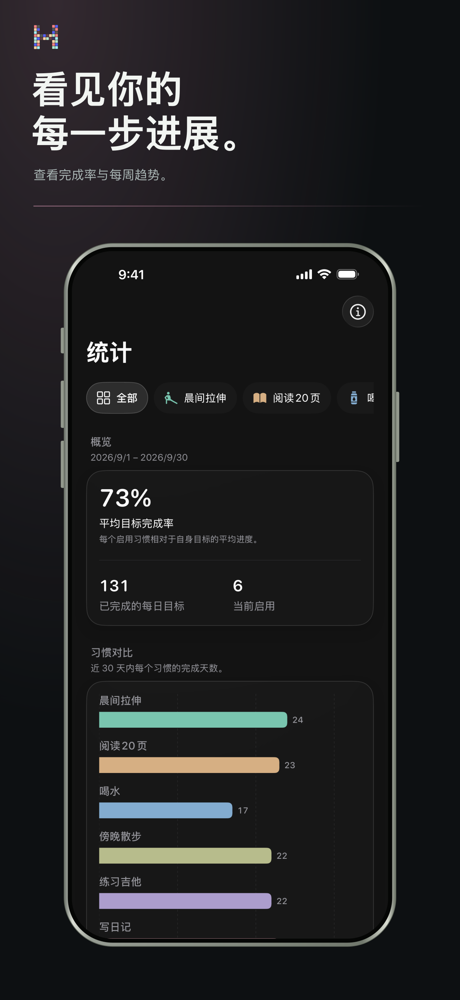
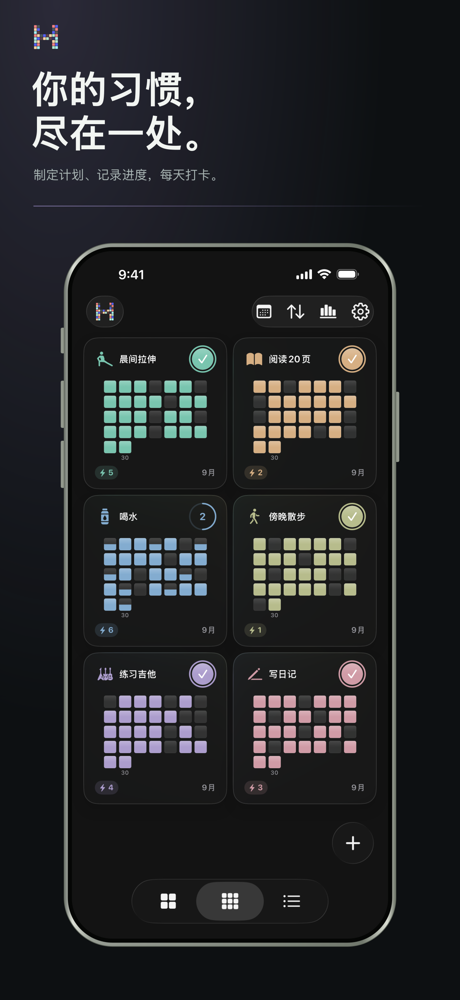
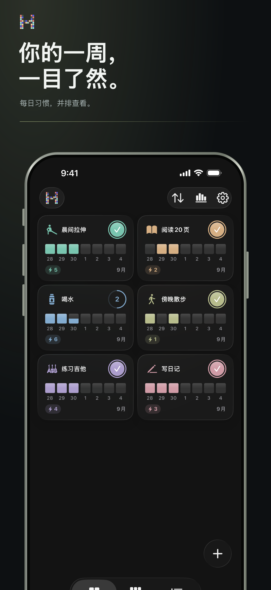

看见规律，而不是压力
了解是什么让你持续回来。
无需把日常变成表格，也能查看连续打卡、完成率和长期规律。
- 当前与最佳连续记录
- 完成趋势与分布
- 周、月、年完整视角
iPhone 上的 HabitBit
不被复杂功能打扰，轻松养成每日习惯。一点完成打卡，按周、月或整年查看日常、连续记录和进度。
下载自App Store无需账户。你的习惯记录只保存在设备上。
HabitBit 的理念
动力很难被记住。但当每一天都留下痕迹，进步就更值得相信。

为再次回来而设计。
一个习惯，三种视角。
本周
聚焦的周视图让你关注今天，同时不丢失正在形成的节奏。

为坚持而生的可视化系统
HabitBit 是一款简洁的 iPhone 每日习惯追踪与日常规划应用。它把一点打卡变成清晰的周、月、年网格，让你不必增加日常负担，也能管理连续记录和目标。
为每项想养成的日常选择名称、图标、颜色、计划和可选提醒。
一点即可完成习惯。每次完成都会成为可视化历史中的一个方格。
切换周、月、年视图，了解连续打卡、中断日期和长期坚持情况。
默认保护隐私
开始前了解一下
HabitBit 是一款简洁直观的 iPhone 习惯追踪与日常规划应用。每日打卡会形成周、月、年网格，让日常、连续记录和长期进度一目了然。
不需要。无需创建账户即可开始记录。习惯数据保存在你的设备本地。
无论是运动、阅读、喝水、学习、正念，还是任何重复行动，都可以作为每日习惯、连续打卡、目标和日常计划来管理。每个习惯都能设置独立的图标、颜色、计划和提醒。
有。HabitBit 提供主屏幕和锁定屏幕小组件、定时提醒，以及番茄钟式专注计时器。
HabitBit 可免费下载和使用。可选的 Pro 购买可解锁无限习惯、高级统计、Pro 小组件、文件导入导出及更多主题颜色。可用方案和当地价格会在应用内显示。
App Store 早期评价
“它帮助我坚持每天的日常安排。很棒。”
“一款能让我的生活更轻松的应用。谢谢。”
“没想到一开始就能看到这样的效果！”
发布在 App Store 上的已验证评价。